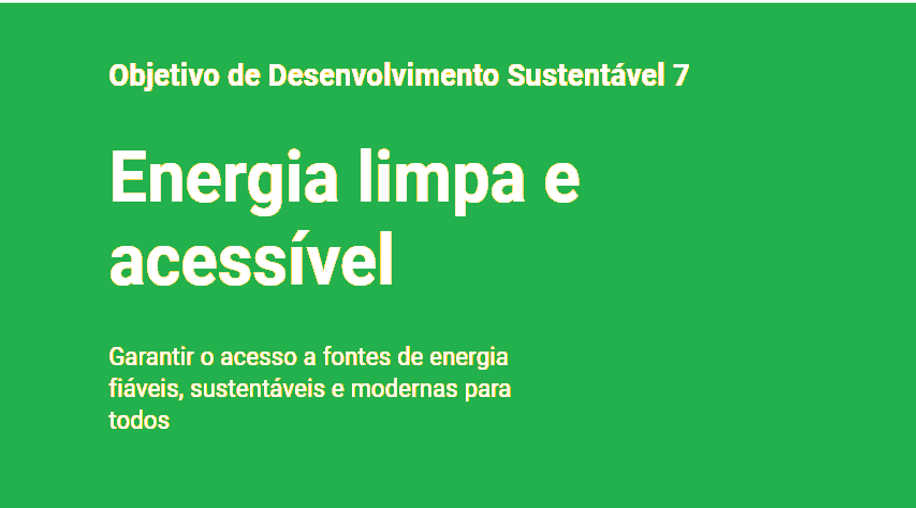

Nosso projeto

Nosso projeto tem como norte a ODS 7.2 que visa até 2030, aumentar substancialmente a participação de energias renováveis na matriz energética global. Consequentemente temos o intuito de até 2030 abordar uma energia renovável, morderna, viável, rentável e acessível a todos. Decidimos abordar este assunto, devido a dificuldade atual de produzir uma energia com um custo mais acessível, menos prejudicial ao meio ambiente além de ser uma energia renovável.
A eco energy surgiu de dois nomes: Ecological (ecológica) e energy (energia). Decidimos inicialmente focar em uma fonte de energia em específico: a energia solar. Energia sustentável é toda energia elétrica originada a partir de fontes renováveis que não geram impactos ao meio ambiente, como por exemplo energia solar fotovoltaica que foi a escolhida. Algumas das das svantagens que possui esse tipo de energia são: Investimento inicial alto, similar ao valor de um carro. Por ter seu custo elevado ela a pesar de seus benefícios muitas vezes acaba sendo não tão acessível pra uma grande parte da população. Bom, mais então quais serão os seus prós? Quais suas vantagens?. Trata-se de uma energia limpa, renovável e abundante que é fornecida pelo sol, Alta durabilidade que pode chegar a durar mais de 25 anos, valoriza a sua casa ou marca de sua empresa e permite que você se torne independente energeticamente.
A ODS 7 trata do acesso às diferentes fontes de energia, principalmente às renováveis, eficientes e não poluentes. A preocupação mundial com a energia segura e com a preservação ambiental culminou, em 2002, com a criação da unidade de Energia da Organização das Nações Unidas (ONU) voltada para a temática. Trata-se de uma ODS que interliga diferentes níveis de poder. A energia é fundamental para a vida cotidiana e também para a produção industrial global. Com isso, os interessados no assunto são muitos e variados, vão desde as famílias que moram no campo, passando pelos municípios urbanos, chegando a Estados nacionais. A energia é um campo de disputa internacional, principalmente quanto ao uso de fontes renováveis e não poluentes, que tem reflexo direto na economia.